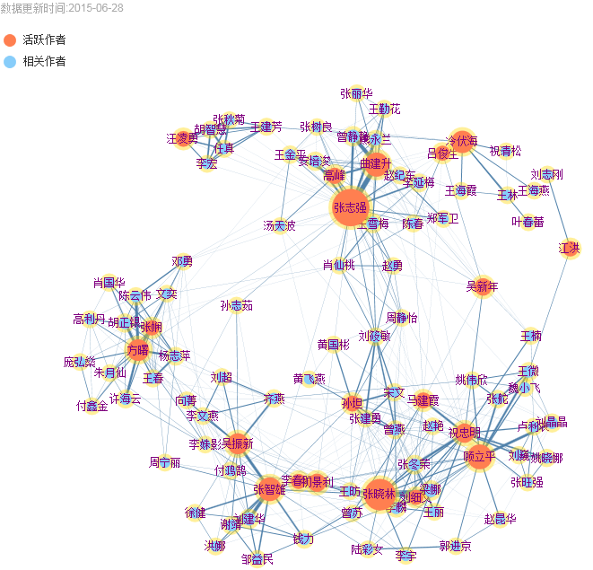

中国农业大学机构知识库
China Agricultural University Knowledge Base
高级检索
机构学院
更多
农学与生物技术学院
生物学院
动物科学技术学院
动物医学院
食品科学与营养工程学院
资源与环境学院
信息与电气工程学院
工学院
水利与土木工程学院
物理学院
经济管理学院
人文与发展学院
思想政治教育学院
图书馆
国际学院
体育与艺术教学部
学科专业
更多
生物学
作物学
植物保护学
园艺学
农业资源利用
农林资源利用
畜牧学
兽医学
农业工程
作者
更多
张志强[348]
张晓林[277]
顾立平[188]
张志雄[177]
曲建升[176]
张志强[348]
张志强[348]
张志强[348]
发表时间
更多
2016
2015
2014
2013
2012
内容类型
更多
SCI论文
(2456)
中文期刊论文
(2456)
学位论文
(2456)
著作
(2456)
专利
(2456)
项目
(2456)
成果
(2456)
作者合作网络
发表时间
1956年
1955年
1958年
至
2014年
2015年
2016年
知识作品类型分布图
